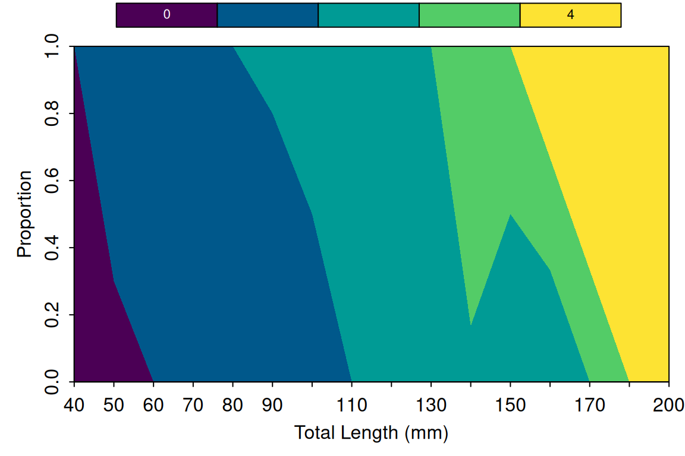
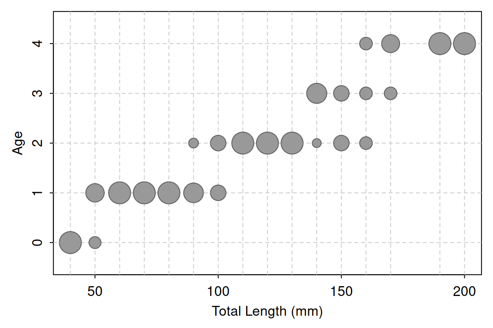
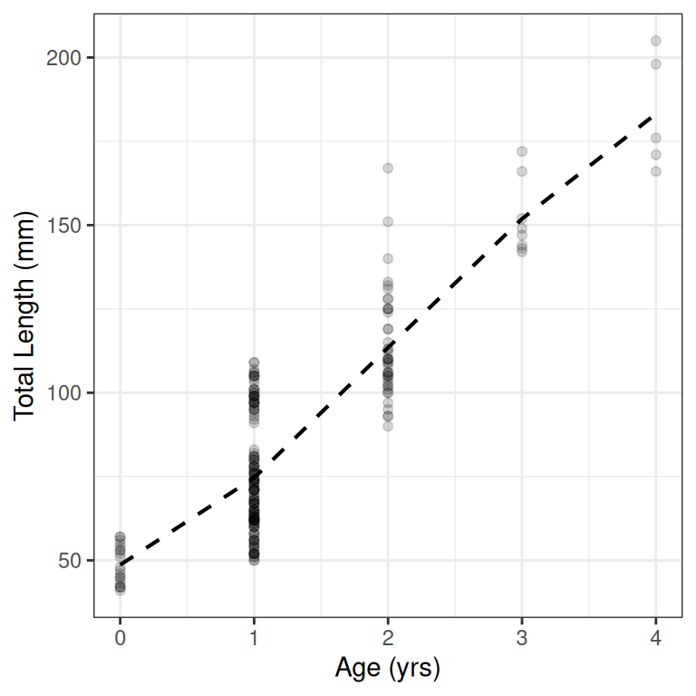

Introduction
Ages of fish are important data for understanding the dynamics of fish populations. Estimating age for a large number of fish, however, is labor intensive. Fortunately, there is usually a strong relationship between length and age, and measuring the length of a large number of fish is relatively easy. Thus, the age structure for a large sample of fish can be reliably estimated by summarizing the relationship between age and length for a subsample of fish and then applying this summary to the entire sample. The summary of the relationship between age and length is an age-length key (ALK). The foundations underlying age-length keys and their application to assign ages to the larger sample are discussed elsewhere, including in Ogle (2016). This article assumes that you have an understanding of that foundation and will thus illustrate methods in FSA to construct an ALK, visualize an ALK, and how to apply an ALK to estimate the age structure of the larger sample of fish.
The following packages are used herein.
Constructing an Age-Length Key
Preparing the Aged Sample
In most situations, a single data file contains the lengths of all sampled fish with corresponding ages for the fish in the aged (sub)sample and missing values (i.e., as NA) for the fish for which ages were not estimated.
As an example, the total lengths (nearest mm) and ages (from scales) of Creek Chub (Semotilus atromaculatus) were recorded in CreekChub distributed in FSAdata. An examination of several rows of the data.frame shows fish with and without estimated ages.
The description for these data indicates that as many as 10 fish per 10-mm length interval were (sub-)sampled to assign an estimated age. Thus, before continuing, it is appropriate to append a new variable to the data.frame that contains the appropriate 10-mm length interval for each fish. This may be accomplished with lencat() from FSA, where the first argument is the name of the variable with the observed lengths and the width of the length intervals to be constructed is given to w=. Here, mutate() from dplyr is used to add the variable to the data.frame and relocate() (also from dplyr) is used to move the new lcat10 variable to after the original len variable.1
The original data.frame with all fish must be separated into one data.frame that contains the fish in the aged sample and a second data.frame that contains the fish not in the aged sample. This separation may be accomplished with filter() from dplyr using is.na() which returns TRUE for the positions in a vector that are NA. Preceding is.na() with ! will return TRUE for the positions in a vector that are not NA. Thus the “aged” subsample of fish with ages and the “unaged” subsample of fish without ages can be constructed as below
# Isolate fish with assigned ages ... i.e., the "aged" sample
cc.aged <- CreekChub |>
filter(!is.na(age))
peek(cc.aged,n=5)
#> len lcat10 age
#> 1 41 40 0
#> 26 62 60 1
#> 52 98 90 1
#> 77 119 110 2
#> 103 205 200 4
# Isolate fish without assigned ages ... i.e., the "unaged" sample
cc.unaged <- CreekChub |>
filter(is.na(age))
peek(cc.unaged,n=5)
#> len lcat10 age
#> 1 45 40 NA
#> 29 62 60 NA
#> 58 71 70 NA
#> 86 95 90 NA
#> 115 109 100 NAThe unaged sample should have all NA values, whereas the aged sample should not have any NA values for the age variable. The all() and any() functions may be used to check that these data.frames contain the fish with the expected entries for age. Specifically, all() returns TRUE if all items in a logical vector are TRUE, whereas any() returns TRUE if any item in a logical vector is TRUE.2
The aged subsample is used to construct an ALK and the ALK will be used to assign estinated ages to those fish in the unaged sample below.
Construct ALK
Observed ALK
The ALK is constructed from the aged sample in two steps. First, the frequency of fish in each length interval and age combination is constructed with xtabs() using a formula of the form ~lcat+age, where lcat contains the length intervals and age contains the estimated ages, as the first argument, and the name of the data.frame that contains these variables in data=.3
alk.freq <- xtabs(~lcat10+age,data=cc.aged)
print(alk.freq,zero.print="-") # print used for display purposes only
#> age
#> lcat10 0 1 2 3 4
#> 40 10 - - - -
#> 50 3 7 - - -
#> 60 - 10 - - -
#> 70 - 10 - - -
#> 80 - 8 - - -
#> 90 - 8 2 - -
#> 100 - 5 5 - -
#> 110 - - 10 - -
#> 120 - - 6 - -
#> 130 - - 3 - -
#> 140 - - 1 5 -
#> 150 - - 1 1 -
#> 160 - - 1 1 1
#> 170 - - - 1 2
#> 190 - - - - 1
#> 200 - - - - 1While it is not a necessary calculation, computing the sum of each row in the frequency table (obtained by submitting the xtabs() object to rowSums()) gives the number of aged fish in each length interval. This summary may indicate how the aged fish were (sub)sampled. For example, the row sums for the Creek Chub data corroborate that a fixed sample of as many as 10 fish per 10 mm length interval were sampled for age estimation.
rowSums(alk.freq)
#> 40 50 60 70 80 90 100 110 120 130 140 150 160 170 190 200
#> 10 10 10 10 8 10 10 10 6 3 6 2 3 3 1 1The conditional proportions that form the ALK are calculated by dividing each cell of the frequency table by the sum of the corresponding row. These row proportions are constructed by submitting the xtabs() object to prop.table() with margin=1 to indicate that the proportions are computed by row.
alk <- prop.table(alk.freq,margin=1)
print(round(alk,3),zero.print="-") # round & print used for display purposes only
#> age
#> lcat10 0 1 2 3 4
#> 40 1.000 - - - -
#> 50 0.300 0.700 - - -
#> 60 - 1.000 - - -
#> 70 - 1.000 - - -
#> 80 - 1.000 - - -
#> 90 - 0.800 0.200 - -
#> 100 - 0.500 0.500 - -
#> 110 - - 1.000 - -
#> 120 - - 1.000 - -
#> 130 - - 1.000 - -
#> 140 - - 0.167 0.833 -
#> 150 - - 0.500 0.500 -
#> 160 - - 0.333 0.333 0.333
#> 170 - - - 0.333 0.667
#> 190 - - - - 1.000
#> 200 - - - - 1.000Thus, for example, 30.0% of Creek Chubs in the 50-mm length interval were age-0 and 70.0% were age-1. Note that no fish in the 180 mm length interval were present in the aged sample.
Smoothed or Modeled Age-Length Keys
Ogle (2016) discussed common “issues” that may arise in ALKs constructed directly from observed lengths and ages, and how statistical models fit to the entire range of possible lengths and ages may ameliorate these issues. The multinomial logistic regression model is one such model that can be used to created a smoothered or predicted ALK.
The multinomial logistic regression model is fit with multinom() from nnet, where the first argument is a formula of the form age~lcat, where age contains the estimated ages and lcat contains the length intervals, and the data.frame with these variables for the aged sample is given in data=. The iterative algorithm used in multinom() will stop, by default, after 100 iterations. More iterations may be needed with ALK data to reach a solution, so I often raise the maximum number of iterations with maxit=, as illustrated below.4
cc.mlr <- multinom(age~lcat10,data=cc.aged,maxit=500)Predictions from the fitted model are made with predict() using the multinom() object as the first argument. The second argument is a data.frame that contains values for the explanatory variable (length intervals, in this case) at which the probabilities of each age should be predicted. This data.frame must contain a variable that is named exactly as the lcat variable in the multinom() call. The length intervals for which to make the predictions are best constructed with seq(), with the minimum length interval value, the maximum length interval value, and the step value for the sequence as the three arguments.5 Finally, include type="probs" so that probabilities, rather than logit odds, are returned by predict().
lens <- seq(40,200,10)
alk.sm <- predict(cc.mlr,data.frame(lcat10=lens),type="probs")
row.names(alk.sm) <- lens # change row names in result for clarity
round(alk.sm,3) # round used for display purposes only
#> 0 1 2 3 4
#> 40 0.997 0.003 0.000 0.000 0.000
#> 50 0.301 0.699 0.000 0.000 0.000
#> 60 0.000 0.999 0.000 0.000 0.000
#> 70 0.000 0.999 0.001 0.000 0.000
#> 80 0.000 0.987 0.013 0.000 0.000
#> 90 0.000 0.874 0.126 0.000 0.000
#> 100 0.000 0.382 0.614 0.004 0.000
#> 110 0.000 0.052 0.929 0.019 0.000
#> 120 0.000 0.005 0.931 0.064 0.000
#> 130 0.000 0.000 0.812 0.187 0.000
#> 140 0.000 0.000 0.562 0.434 0.004
#> 150 0.000 0.000 0.267 0.693 0.040
#> 160 0.000 0.000 0.077 0.667 0.256
#> 170 0.000 0.000 0.009 0.278 0.713
#> 180 0.000 0.000 0.001 0.055 0.944
#> 190 0.000 0.000 0.000 0.009 0.991
#> 200 0.000 0.000 0.000 0.001 0.999Thus, for example, 30.1% of Creek Chubs in the 50 mm length interval are predicted to be age-0 and 69.9% are predicted to be age-1. Note that in this modeled ALK (as compared to the observed ALK from the previous section) no proportion is exactly 1 (or 0) and that proportions exist for the 180 mm length interval for which no fish existed in the aged sample.
Visualizing an ALK
The ALK, whether observed or smoothed, may be displayed as a series of stacked bars, stacked areas, or connected lines over length interval labels, with different colors or shadings for each age (Figure 1). These plots are constructed with alkPlot() from FSA, with the ALK object as the first argument. A stacked bar plot is the default. Stacked area and line plots are constructed by including type="area" or type="line", respectively, in alkPlot(). The ages are denoted by a set of richly-contrasting colors by default, but this may be changed to shades of gray with pal="gray". Finally, a legend for the colors is added to the area plot with showLegend=TRUE. The size of the legend may be decreased or increased from the default size by including a number less or more than 1, respectively, in leg.cex=.6
alkPlot(alk,type="area",pal="gray",showLegend=TRUE,leg.cex=0.7,xlab="Total Length (mm)")
The ALK is also commonly shown as a “bubble plot,” where circles with areas proportional to the number of fish in each length interval that are a given age are placed at the coordinates of the length intervals and ages (Figure 2).
alkPlot(alk,type="bubble",xlab="Total Length (mm)")
The visualizations produced by alkPlot() are not publication-quality and are generally used to provide a quick look to identify patterns or anomalies. Publication-quality visuals are better constructed using ggplot2 as described here.
Apply an ALK
Age-length keys are typically applied to the unaged (sub)sample of fish with the goal of estimating the distribution of ages or some other biological value for each age (e.g., mean length-at-age) in the complete sample. Various methods for computing these two types of summaries are described in this section.
Assign Individual Ages and Summarize
Ogle (2016) describes a method where individual fish in the unaged sample are assigned an age based on an ALK; thus, all fish will then have a recorded age. The advantage of this method is that standard statistical formulae can be used to estimate variability for measures like mean length-at-age and standard statistical methods (e.g., t-tests, analysis of variance, likelihood ratio tests) can be used to compare age-based summaries among groups (e.g., compare mean lengths-at-age between sexes).
The concepts behind this method, as implemented with alkIndivAge() from FSA, are described in detail in Ogle (2016). The first argument to alkIndivAge()is the ALK object. The second argument is a formula of the form age~len.7 The data.frame with these variables for fish in the unaged sample is given in data=. The function returns a data.frame that has the same number of rows as the data.frame given in data=, but each fish will have an assisned age based on the ALK. The data.frame returned by alkIndivAge() should be assigned to an object.8
cc.unaged.mod <- alkIndivAge(alk,age~len,data=cc.unaged)
peek(cc.unaged.mod,n=5)
#> len lcat10 age
#> 1 45 40 0
#> 29 62 60 1
#> 58 71 70 1
#> 86 95 90 1
#> 115 109 100 1The new data.frame with assigned ages may be row-bound (using rbind()) with the data.frame that contains the aged sample to form a data.frame of all the original fish, now with estimated ages for all fish.
This data.frame can now be summarized in a variety of ways. For example, the number of fish of each age may be computed with xtabs() and the proportion at each may be computed from that result with prop.table().
( ad3 <- xtabs(~age,data=cc.fnl) )
#> age
#> 0 1 2 3 4
#> 20 142 43 8 5
round(prop.table(ad3),3) # rounded for display purposes only
#> age
#> 0 1 2 3 4
#> 0.092 0.651 0.197 0.037 0.023Thus, 142 fish or 65.1% of all sampled fish are estimated to be age-1.
The means and standard deviations of lengths-at-age may be computed using group_by() and summarize() from dplyr.
cc.sumlen <- cc.fnl |>
group_by(age) |>
summarize(n=validn(len),
mn=mean(len,na.rm=TRUE),
sd=sd(len,na.rm=TRUE),
se=se(len,na.rm=TRUE)) |>
as.data.frame()
cc.sumlen
#> age n mn sd se
#> 1 0 20 48.6500 5.612721 1.255042
#> 2 1 142 74.6338 16.780806 1.408214
#> 3 2 43 113.4651 15.804383 2.410146
#> 4 3 8 151.8750 11.179541 3.952565
#> 5 4 5 183.2000 17.253985 7.716217Thus, the estimated mean length of age-1 Creek Chubs is 74.6 mm with a standard deviation of 16.8 mm.
Finally, because ages were assigned to individuals, a plot of individual lengths-at-age with mean lengths-at-age superimposed (Figure 3) may be constructed.
ggplot() +
geom_point(data=cc.fnl,mapping=aes(x=age,y=len),alpha=0.15) +
geom_line(data=cc.sumlen,mapping=aes(x=age,y=mn),linetype="dashed",linewidth=0.75) +
scale_x_continuous(name="Age (yrs)") +
scale_y_continuous(name="Total Length (mm)") +
theme_bw()
Classical Method for Summarization
Ogle (2016) describes the specifics underlying “classical”9 methods of calculating the number and means lengths of all fish at each age (with associated measures of variability). Those methods are implemented in alkAgeDist() and alkMeanVar() from FSA.
The proportions of all fish, with standard errors, at each age are computed with alkAgeDist() with the ALK object as the first argument and vectors of sample sizes in each length interval for the aged and overall samples in lenA.n= and len.n=, respectively.
( lenA.n <- rowSums(alk.freq) ) # alk.freq was constructed previously
#> 40 50 60 70 80 90 100 110 120 130 140 150 160 170 190 200
#> 10 10 10 10 8 10 10 10 6 3 6 2 3 3 1 1
( len.n <- xtabs(~lcat10,data=CreekChub) )
#> lcat10
#> 40 50 60 70 80 90 100 110 120 130 140 150 160 170 190 200
#> 11 33 42 32 8 25 32 10 6 3 6 2 3 3 1 1
alkAgeDist(alk,lenA.n=lenA.n,len.n=len.n)
#> age prop se
#> 1 0 0.09587156 0.028037207
#> 2 1 0.64724771 0.044703252
#> 3 2 0.19724771 0.036408292
#> 4 3 0.03669725 0.013789774
#> 5 4 0.02293578 0.008754956Thus, approximately 64.7%, with a SE of 4.5%, of the complete sample are estimated to be age-1.
The mean (and standard deviation) length-at-age of all fish are computed with alkMeanVar() with the ALK object as the first argument. The second argument is a formula of the form var~lcat+age, where var contains the quantitative variable of interest (e.g., length, weight), lcat contains the length interval for each fish (must be the same length intervals used to construct the ALK), and age contains the age of each fish. The data.frame that contains these variables for the aged sample is given in data=. The vector of sample sizes in each length interval for the overall sample is given in len.n=.
alkMeanVar(alk,len~lcat10+age,data=cc.aged,len.n=len.n)
#> age mean sd
#> 1 0 49.05263 5.458119
#> 2 1 74.07725 17.232147
#> 3 2 112.98372 16.054776
#> 4 3 151.87500 10.960155
#> 5 4 183.20000 17.163187Thus, the estimated mean length of age-1 Creek Chubs is 74.1 mm with a standard deviation of 17.2 mm.